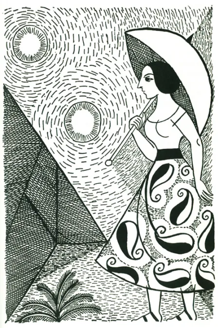
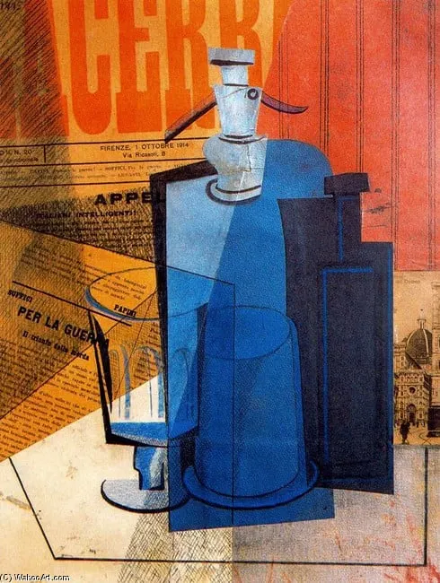
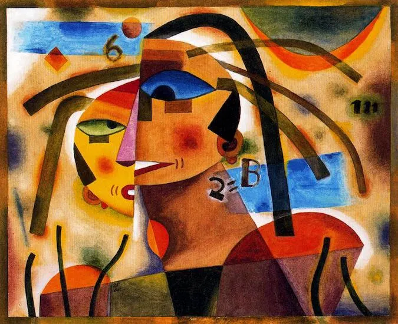
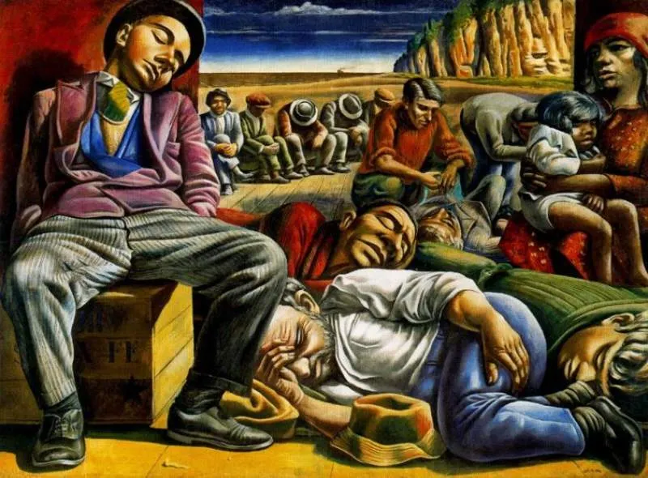
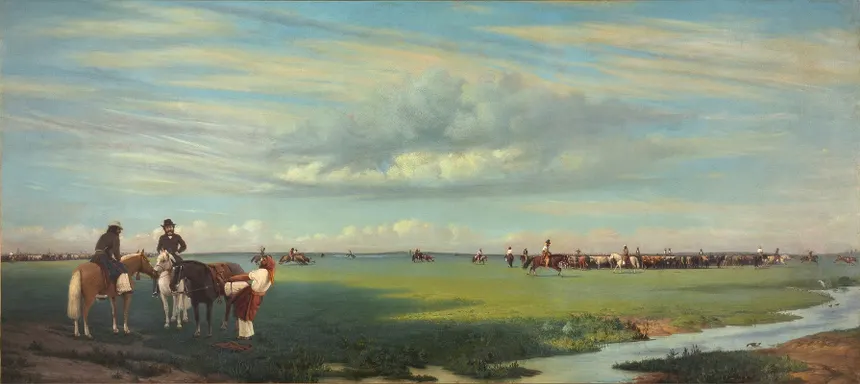

Galería de Arte del País, nuestra Galería de Arte Virtual, se despliega una selección de obras que representan distintos momentos y estilos del arte argentino. Encontrarán piezas que exploran la espiritualidad y el simbolismo con colores vibrantes, escenas populares que retratan la vida cotidiana en el puerto, composiciones que denuncian la realidad social y la marginalidad urbana, propuestas vanguardistas que introducen la geometría y el cubismo en nuestro país, y creaciones contemporáneas que apuestan por la participación, el impacto visual y el arte efímero. Esta diversidad ofrece un recorrido que va desde la tradición pictórica hasta las expresiones más innovadoras del arte moderno y conceptual.




